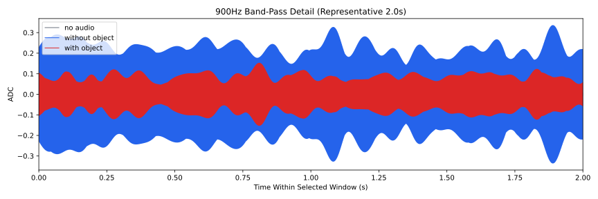
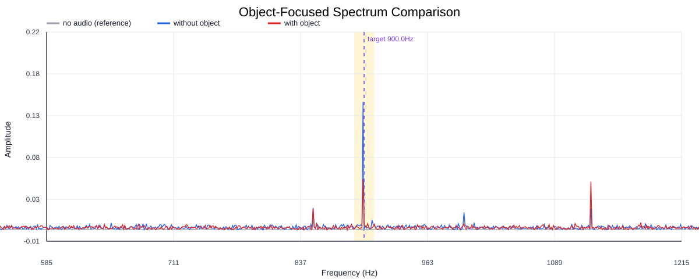
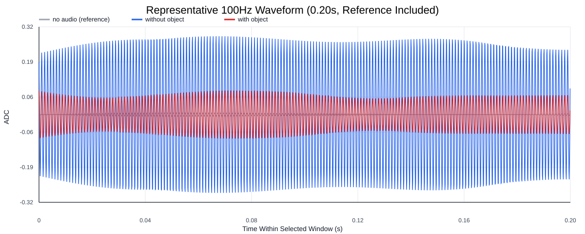
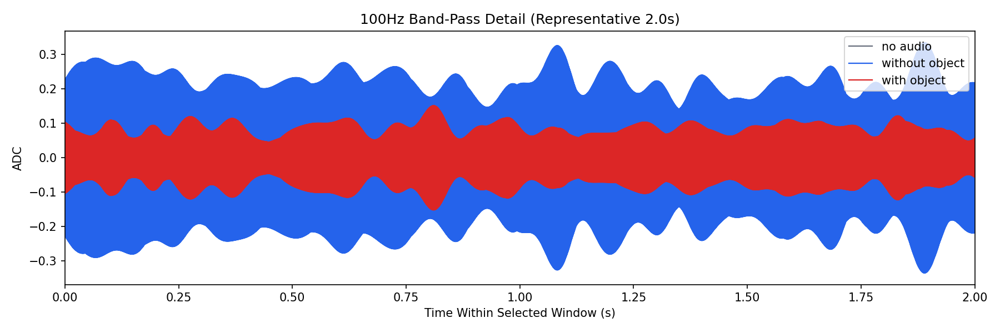
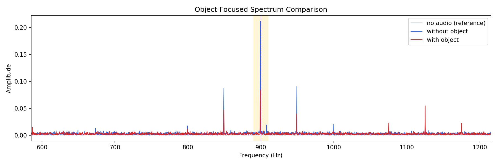
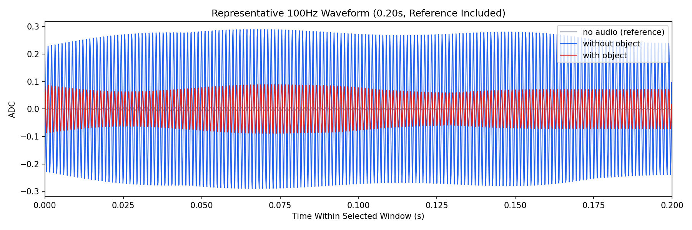

Background: F:\项目类文件夹\异物检测4.10\Data_Dual\frequency_sweep\0900Hz\repeat_01\raw\no_audio.csv
Without object: F:\项目类文件夹\异物检测4.10\Data_Dual\frequency_sweep\0900Hz\repeat_01\raw\without_object.csv
With object: F:\项目类文件夹\异物检测4.10\Data_Dual\frequency_sweep\0900Hz\repeat_01\raw\with_object.csv
| Metric | 无音频 | 100Hz无异物 | 100Hz有异物 | 无异物/无音频 | 有异物/无异物 | 有异物/无音频 |
|---|---|---|---|---|---|---|
| centered_rms | 0.053644 | 0.351659 | 0.292762 | 6.5554 | 0.8325 | 5.4575 |
| raw_target_amp | 0.000177 | 0.001231 | 0.005865 | 6.9537 | 4.7658 | 33.1399 |
| filtered_rms | 0.003624 | 0.155940 | 0.063419 | 43.0272 | 0.4067 | 17.4987 |
| filtered_target_amp | 0.000177 | 0.001231 | 0.005865 | 6.9537 | 4.7658 | 33.1399 |
| filtered_energy_ratio | 0.004564 | 0.196641 | 0.046926 | 43.0814 | 0.2386 | 10.2808 |
| window_filtered_target_amp_mean | 0.004024 | 0.216533 | 0.086599 | 53.8110 | 0.3999 | 21.5210 |
| window_filtered_target_amp_std | 0.002831 | 0.040598 | 0.022045 | 14.3403 | 0.5430 | 7.7869 |





